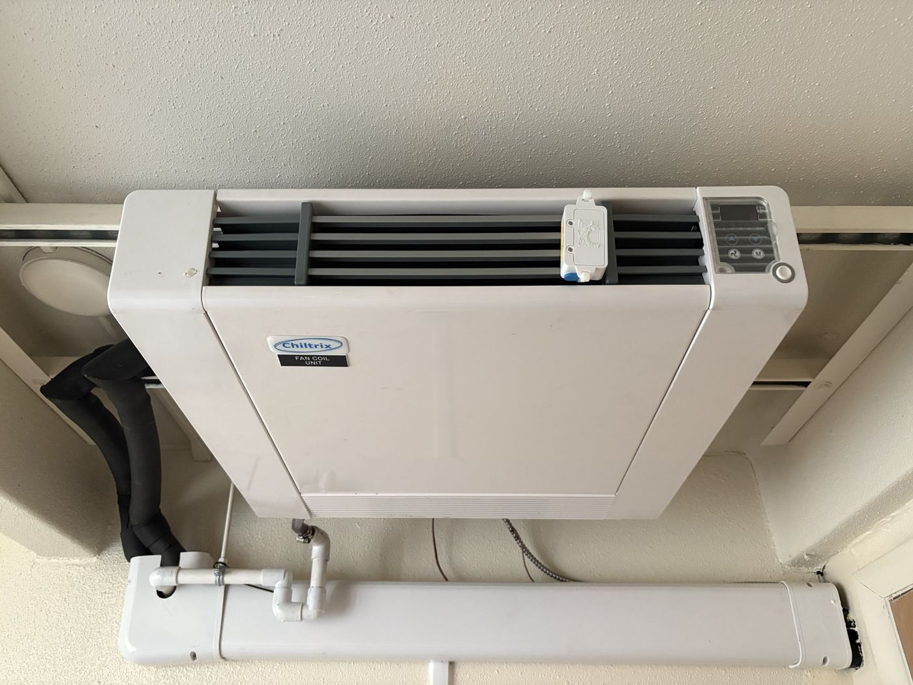
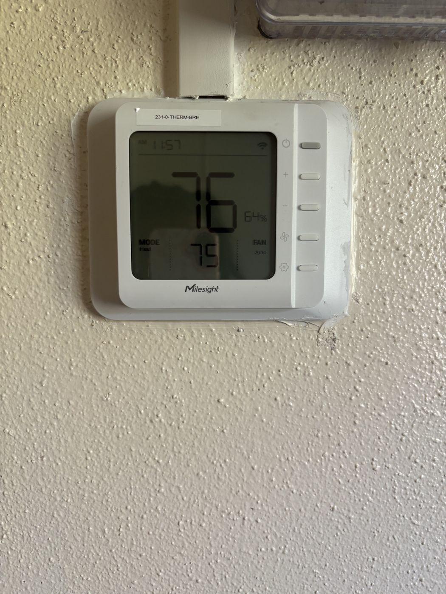
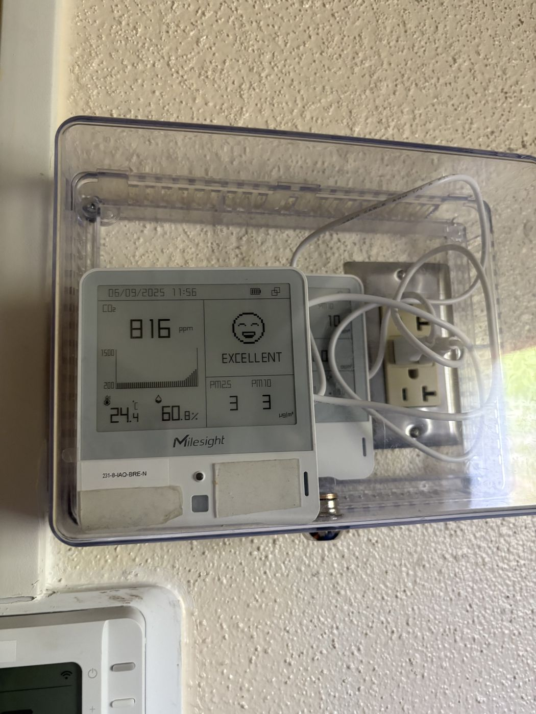
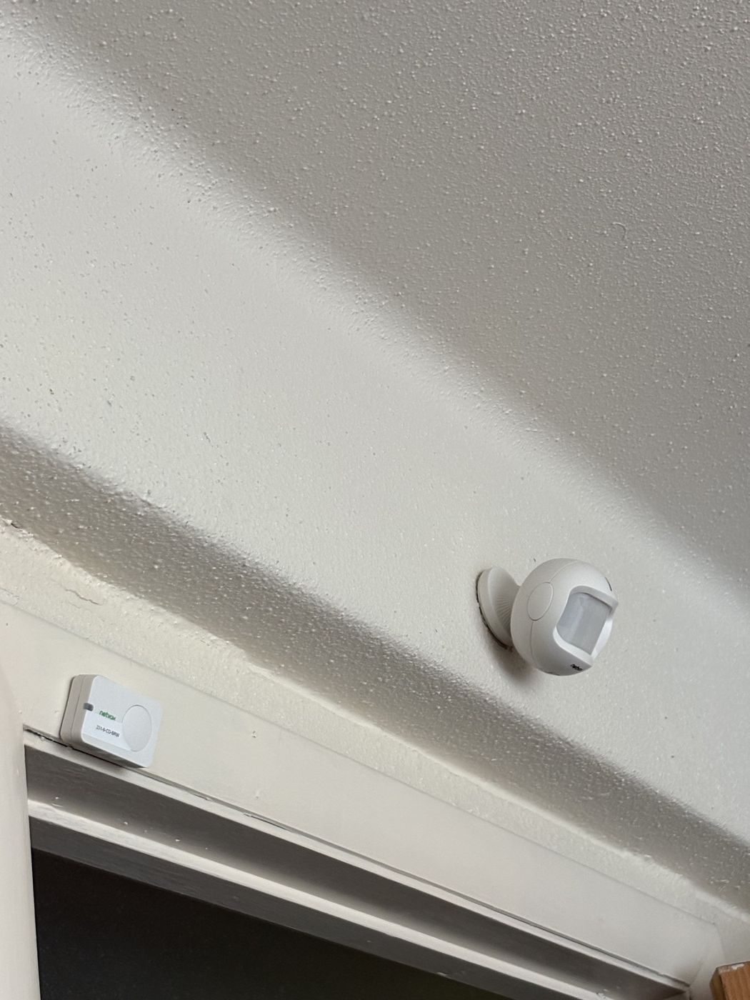
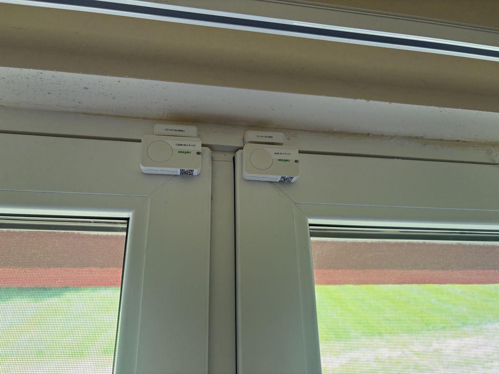
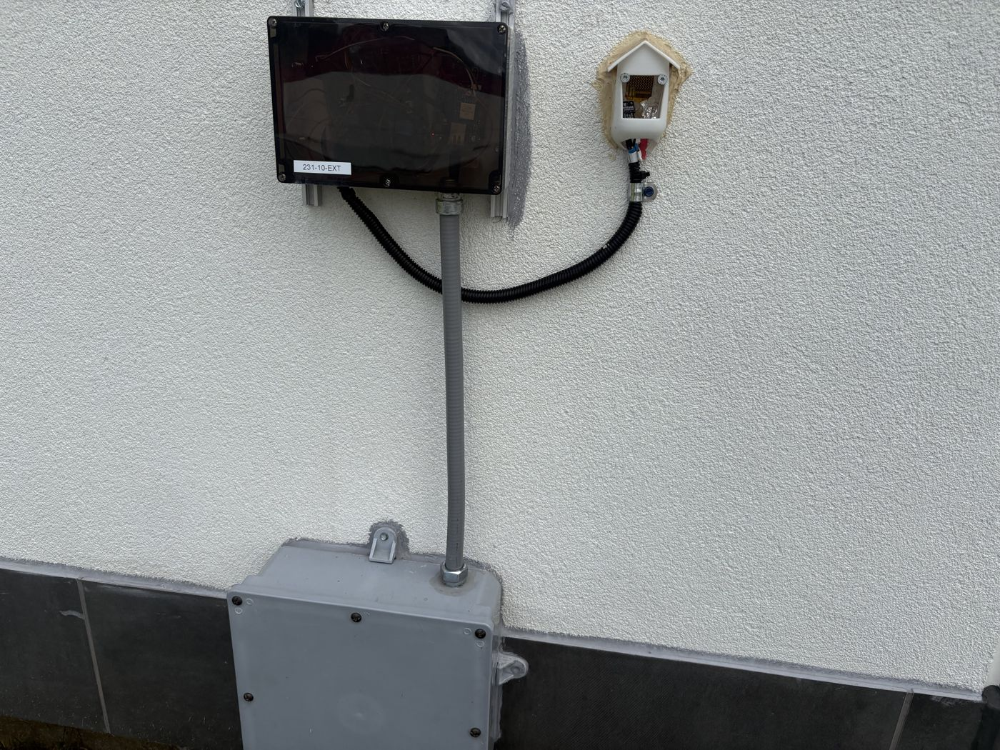

Using data to ask better questions about the built environment — from sensor systems and predictive maintenance to the intersection of building science and analytics.
Condition flagging system built in Python / pandas
This study examines whether existing building sensor data can detect poor heating performance before residents file complaints. Using indoor temperature, occupancy, and outdoor weather data from two Syracuse University dormitory units, a three-condition flagging system identified heating issues — revealing that Unit A-8 had a heating issue rate of 8.6% compared to 3.6% in Unit A-7, despite sharing the same building and heating system.
In the Field

Heating unit in a monitored unit

Smart thermostat logging indoor temperature

Indoor sensor: CO₂, temperature, humidity

Occupancy sensor at the entry

Window contact sensors

Exterior monitoring equipment
In the Press
Retrofitting for the Future
Syracuse University Magazine · Fall 2025 · pp. 10–13
“[The project] connects data, sensors and real building systems in a way that matters.”
— Diamone Cromer ’28, quoted in the article